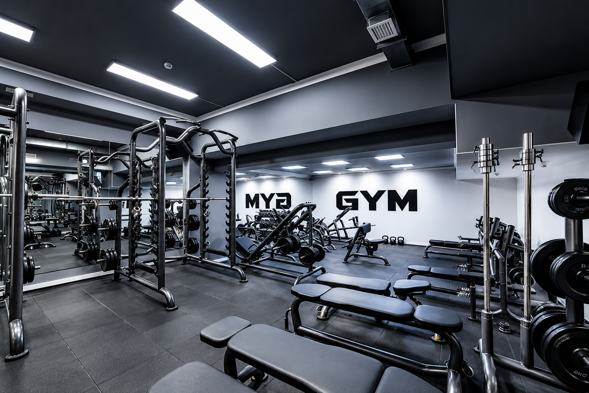

01 / PERSONALIZAÇÃO
Treinos personalizados
Fichas organizadas de acordo com seus objetivos, sua rotina e seu nível de experiência.
Criar meu treino
O personal digital que adapta o treino à sua rotina, considera suas limitações e ajuda você a buscar uma prática de exercícios mais segura.
Criar meu treinoFerramentas para ajudar você a treinar de forma mais consciente, organizada e personalizada.
Fichas organizadas de acordo com seus objetivos, sua rotina e seu nível de experiência.
Criar meu treinoConheça suas limitações e encontre orientações para uma prática de exercícios mais segura.
Conhecer o projetoOrganize sua rotina de exercícios e construa hábitos consistentes para progredir.
Ver minhas fichas